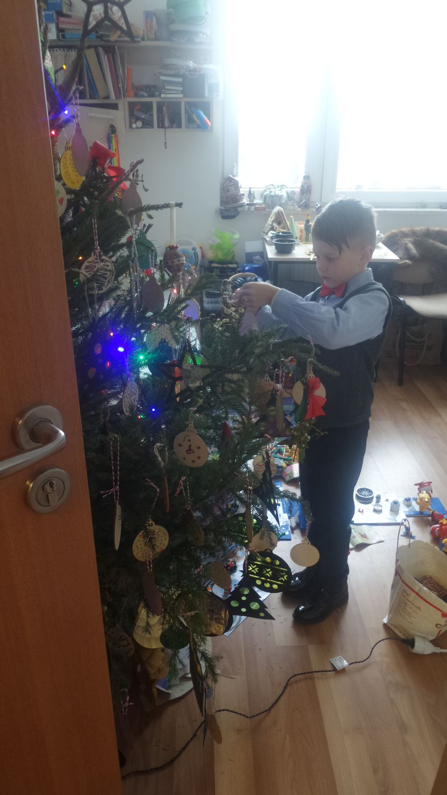
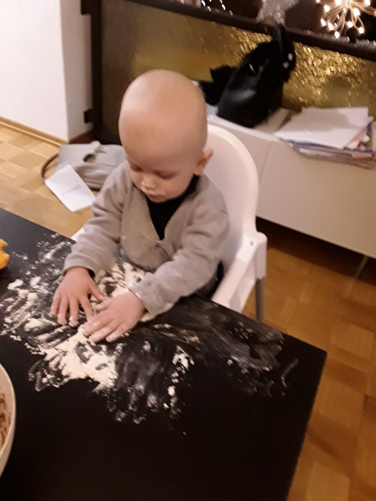

Weihnachten war immer unser Fest. Wochenlang haben wir gebastelt, gebacken, Lichter aufgehängt. Du hast jeden Morgen gefragt, wie oft du noch schlafen musst. Am Heiligen Abend standest du im festlichen Hemd vor dem Baum, und deine Augen haben heller geleuchtet als jede Kerze.

Dieses Jahr war der Baum trotzdem geschmückt. Nicht, weil mir nach Feiern zumute war – sondern weil ich dir versprochen habe, dass Weihnachten auf dich wartet. Deine Geschenke sind verpackt. Dein Platz ist gedeckt. Alles ist da. Nur du nicht.
Niemand bereitet einen darauf vor, wie laut Stille sein kann. Auf ein Weihnachten, an dem man das Lachen des eigenen Kindes nur in der Erinnerung hört. Zwischen all den Familien, die zusammen feiern, sitzt eine Mutter, deren Kind in einem Heim schläft – nicht, weil ihm etwas geschehen wäre, sondern weil ein Amt entschieden hat, ohne dass je ein Richter ein Urteil gesprochen hätte.

Ich erzähle das nicht, um Mitleid zu bekommen. Ich erzähle es, weil irgendwo da draußen gerade eine andere Familie ihr erstes Weihnachten ohne ihr Kind übersteht und glaubt, sie sei allein damit. Bist du nicht. Wir sind viele. Und wir werden lauter.
Mein Junge: Deine Geschenke warten. Mama auch. So lange es dauert.